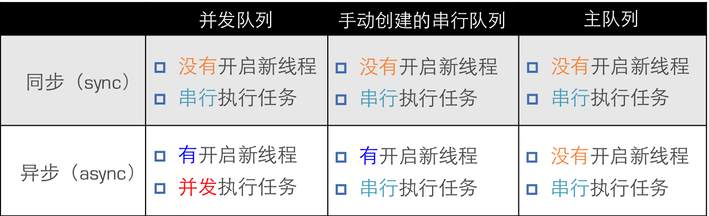

多线程-GCD总结
Wed 10 May 2017 by Little Captain简介
- 全称是Grand Central Dispatch，可译为“宏大的中枢调度器”
- 纯C语言，提供了非常多强大的函数
GCD的优势
- 苹果公司为多核的并行运算提出的解决方案
- 自动利用更多的CPU内核
- 自动管理线程的生命周期
- 创建线程
- 调度任务
- 销毁线程
- 使用方便 : 程序员只需要告诉GCD想要执行什么任务，不需要编写任何线程管理代码
核心概念
任务
- 执行什么操作
队列
- 用来存放任务
类型
- 并发队列
- Concurrent Dispatch Queue
- 可以让多个任务并发（同时）执行
- 自动开启多个线程同时执行任务
- 并发功能只有在异步（dispatch_async）函数下才有效
- 串行队列
- Serial Dispatch Queue
- 让任务一个接着一个地执行
- 一个任务执行完毕后，再执行下一个任务
同步和异步
- 同步
- 只能在当前线程中执行任务
- 不具备开启新线程的能力
- 异步
- 可以在新的线程中执行任务
- 具备开启新线程的能力
容易混淆的术语
- 同步和异步 : 主要影响能不能开启新的线程
- 并发和串行 : 主要影响任务的执行方式
使用步骤
定制任务
- 任务 : 确定想做的事情
- 将任务添加到队列中
- GCD会自动将队列中的任务取出，放到对应的线程中执行
- 任务的取出遵循队列的FIFO原则：先进先出，后进后出
执行任务
- GCD中有2个用来执行任务的常用函数
- 用同步的方式执行任务 : dispatch_sync
- 用异步的方式执行任务 : dispatch_async
- 参数: queue 队列、block 任务
- dispatch_barrier_async
- 在前面的任务执行结束后它才执行
- 它后面的任务等它执行完成之后才会执行
- 参数queue不能是全局的并发队列, 不然没有任何效果
具体使用
创建队列
- dispatch_queue_create
- 参数
- label : 队列名称
- attr : 队列的类型
并发DISPATCH_QUEUE_CONCURRENT
串行DISPATCH_QUEUE_SERIAL==NULL
- GCD默认已经提供了全局的并发队列，供整个应用使用，可以无需手动创建
- dispatch_get_global_queue
- 参数
priority : 队列的优先级DISPATCH_QUEUE_PRIORITY_DEFAULT==0
flags : 暂时无用，用0即可
- 创建串行队列
- dispatch_queue_create
- 使用主队列
跟主线程相关联的队列
主队列是GCD自带的一种特殊的串行队列
放在主队列中的任务，都会放到主线程中执行
dispatch_get_main_queue
各种队列的执行效果

- 异步+串行队列 : 只会开启一条线程
- 异步+并发队列 : 可能会开启多条线程
说明
- 使用sync函数往当前串行队列中添加任务，会卡住当前的串行队列
- 可以通过控制函数和队列来控制任务的执行
- 函数和队列只为任务的执行定了一个基本准则
- 具体开不开线程, 开启多少线程由系统决定
线程间通信
- 直接进行dispatch函数的嵌套即可
- 嵌套时, 通过控制队列, 来实现线程间的通信
GCD其他应用
延时执行
- 调用NSObject的方法 : performSelector
- 使用GCD函数 :
dispatch_after
可以控制代码执行的队列
更精确 - 使用NSTimer : scheduledTimerWithTimeInterval
一次性代码
- 使用dispatch_once函数能保证某段代码在程序运行过程中只被执行1次
- 线程安全
- dispatch_once
快速迭代
- dispatch_apply : 遍历时, 顺序不确定
- 快速迭代遍历
队列组
需求
- 首先, 分别异步执行2个耗时的操作
- 其次, 等2个异步操作都执行完毕后，再回到主线程执行操作
使用到的方法
- dispatch_group_async
- dispatch_group_notify : 异步的被执行
- dispatch_group_wait : 同步等待, 然后执行
单例模式
作用
- 可以保证在程序运行过程，一个类只有一个实例，而且该实例易于供外界访问
- 从而方便地控制了实例个数，并节约系统资源
使用场合
- 在整个应用程序中，共享一份资源
- 这份资源只需要创建初始化1次
实现
ARC
- 创建全局的static的实例 : static id _instance;
- 重写allocWithZone:方法 : 使用dispatch_once, 保证线程安全
- 提供1个类方法让外界访问唯一的实例 : sharedInstance
- 实现copyWithZone:方法
- 实现mutableCopyWithZone:方法
MRC
- 在 ARC 的基础上增加下面的实现
- 重写release方法 : 啥也不做
- 重写retain方法 : 返回_instance
- 重写retainCount方法 : 返回MAXFLOAT表明这是一个单例不会被释放